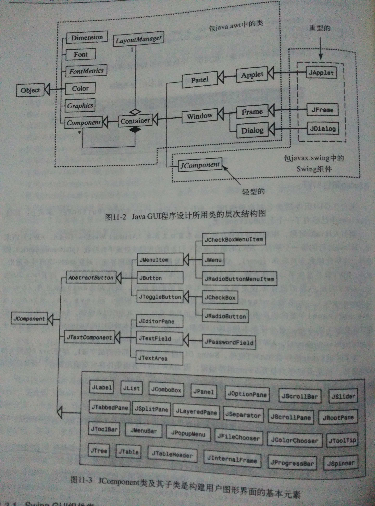
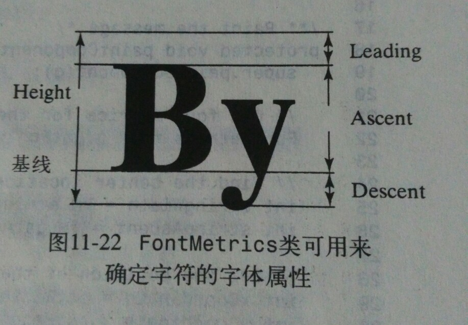

本文总结源自《Java语言程序设计》原书第五版，作者为Y.daniel Liang，习题及编程练习均参照此书。
主要内容
本章介绍Java GUI程序设计基础。讨论GUI组件以及它们的关系，介绍容器和布局管理器、颜色、字体、以及几何图形的绘制。
GUI组件
重型组件(heavyweight component)：抽象窗口组件(Abstract Window Tookit,AWT)称为重型组件，因为它基于同位体的解决方案非常依赖底层平台。AWT的组件通过它们各自的代理映射成平台特性（platform-specific）的组件，这些代理称为同位体(peer)。轻型组件(lightweight component)：不依赖本地GUI的Swing组件库(Swing components)中的组件称为轻型组件，Swing组件更少地依赖目标机器上的平台，更少使用本地的GUI资源。- 大多数Swing组件都是直接用Java代码绘制的，而java.awt.Window或java.awt.panel子类的组件例外，它们必须使用具体平台上的本地GUI来绘制。
- 为了区别Swing组件和AWT组件，Swing GUI组件类的开头都有前缀字母J。
Java GUI API

为开发GUI程序所做的Java API设计是应用类、继承性和接口的一个优秀范例。GUI类的分类如下：
容器类(container class)：如JFrame、Jpanel和Japplet等，用来包含其他组件。- Container用来组织组件。根据要求的位置和格式，布局管理器把组件定位放置到容器上。框架、面板和applet都是容器的例子。
- JFrame是不能包含在其他窗口内的窗口。在Java GUI应用程序中，它是包含其他Swing用户界面组件的容器。
- JDialog是一个弹出式信息窗口。一般用作接收用户附加信息或公告事件发生通知的临时窗口。
- JApplet是Applet的一个子类。要创建基于Swing的Java Applet必须扩展JApplet。
- Jpanel是一个存放用户界面组件的不可见容器。面板可以嵌套，可以把面板放在包含面板的容器中。Jpanel也可以作为画布来画图。
辅助类(helper class)：如Graphics、Color、Font、FontMetrics和Dimension等，是组件和容器用来绘制和放置对象的。它们都不是Component的子类。- Graphics是一个抽象类，它提供一个图形环境，用于绘制字符串、直线和简单几何图形。
- Color类用来处理图形组件的颜色。
- Font指定GUI组件上文本和图形的字体。
- FontMetrics是一个用于获取字体属性的抽象类。
- Dimension将组件的宽度和高度（精度为整数）封装在单个对象中。
- LayoutManager是一个接口，它的实例指定组件在容器中的摆放方式。
辅助类包含在java.awt包中。Swing组件不能取代AWT的全部类，只能替代AWT的GUI组件类，辅助类仍保持不变。
组件类(component)：图形用户界面（GUI）组件类，如JButton、JTextField、JTextArea、JComboBox、JList、JRadioButton和JMenu等，都是JComponent类的子类。
JFrame、Japplet、JDialog和JComponent类及其子类都组织在javax.swing中。
框架JFrame
创建框架
方法一：使用JFrame的构造方法
12JFrame frame = new JFrame();// JFrame frame = new JFrame(String title);方法二：扩展JFrame框架，创建自己的框架
123class MyFrame extends JFrame {}
其中，方法二较好，理由如下：
1、创建一个GUI应用程序就是要创建一个框架，所以扩展JFrame类来定义一个框架是很自然的。
2、如果需要的话，这个新类可以重复使用。- 在框架中添加组件12java.awt.Container container = frame.getContentPane(); //返回框架的内容窗格container.add(xxx);
组件是由内容窗格的布局管理器放置在框架上的，而内容窗格默认的布局管理器是将按钮放到中央。
- 框架居中
默认情况下，框架在屏幕的左上角显示。可以使用JFrame类中的setLocation（x，y）方法调整框架位置。要使框架居中，就要知道屏幕的宽和高，这可以由java.awt.Toolkit类得到：123Dimension screenSize = Toolkit.getDefaultToolkit().getScreenSize();int screenWidth = screenSize.width;int screenHeight = screenSize.height;
java.awt.Dimension类将组件的宽和高（精度为整数）封装在单个对象中。使用getWidth()和getHeight()方法获取组件的宽和高。
布局管理器
Java的布局管理器提供了一层抽象，自动把用户界面映射到所有的窗口系统。其它窗口系统一般使用硬编码（hard-code）的像素尺寸来安排用户界面组件。
- 布局管理器是使用布局管理器类创建的，每一个布局管理器类都实现了LayoutManager接口。
- 使用
setLayout（layoutManager）方法在容器中设置布局管理器。 - 布局管理器的种类：
- FlowLayout（流式布局管理器）：按照添加的顺序，由左到右将组件排列在容器中，放满一行时，就开始新的一行。
- 可以使用常量来指定对齐方式：FlowLayout.RIGHT、FlowLayout.CENTER和FlowLayout.LEFT。
- public FlowLayout（int align，int hGap，int vGap）根据指定的对齐方式、水平间距和垂直间距构造一个新的FlowLayout对象。间距是指组件之间用像素度量的距离。
- public FlowLayout（int align）
- public FlowLayout（）使用默认的构造方法创建，默认的对齐方式是居中，默认的水平间距和垂直间距都是5个像素。
- GridLayout（网格布局管理器）：根据构造方法定义的行数和列数，布局管理器GridLayout以网格（矩阵）的形式排列组件。
- public GridLayout（int rows,int columns,int hGap,int vGap）
- public GridLayout（int rows,int columns）组件在容器上的水平和垂直间距为0。
- public GridLayout（）创建的新的GridLayout对象只有一行。
行数或列数可以为零，但不能两个同时为零。如果一个为零另一个不为零，则不为零的维数已经固定，为零的维数由布局管理器动态地决定。
- BordLayout（板式布局管理器）：将窗口分为五部分：东区、南区、西区、北区和中央。由常量EAST、WEST、NORTH、SOUTH决定组件的位置。
- public BorderLayout（int hGap，int vGap）
- public BorderLayout（）
- 组件根据它们最合适的尺寸和在容器中的位置来放置。可以随意扩展拉伸。
在FlowLayout和GridLayout两个布局管理器中，组件添加到容器中的顺序是很重要的，它决定了组件在容器中的位置。
- FlowLayout（流式布局管理器）：按照添加的顺序，由左到右将组件排列在容器中，放满一行时，就开始新的一行。
- 布局管理器的属性
布局管理器的属性可以动态的改变。可以在创建后使用set方法改变其属性。 - validate和doLayout方法
- 每一时刻，一个容器只能有一个布局管理器。可以使用setLayout（aNewLayout）方法改变容器的布局管理器，然后使用validate()方法强迫容器根据新的布局管理器重新摆放其中的组件。
- 如果使用相同布局管理器但是改变了它的属性，需要使用doLayout（）方法强迫容器根据布局管理器的新属性对组件重新放置。
颜色类Color
- 颜色由红、绿、蓝三原色构成，每种原色的强度都用一个byte值表示，从0（最暗）到255（最亮）。这就是通常所说的
RGB模式(RGB model)。 - java将13种标准色定义为常量，可以使用常量设定颜色。自JDK 1.4开始，新常量均为大写。
字体类Font
- 使用java.awt.Font类来创建字体对象，并使用Component类中的setFont方法设置组件的字体。
- public Font（String name，int style，int size）
- 可以使用系统上的其它字体创建字体对象。为了找到系统上的字体，需要使用`java.awt.GraphicsEnvironment类的静态方法getLocalGraphicsEnvironment（）类来创建它的一个实例。12345GraphicsEnvironment e = GraphicsEnvironment.getLocalGraphicsEnvironment();String[] fontnames = e.getAvailableFontFamilyNames();for(int i = 0; i < fontnames.length; i++) {System.out.println(fontnames[i]);}
使用面板作子容器
- 使用Java用户图形界面程序设计，可以将窗口分成几个面板，面板是分组放置用户界面组件的子容器。
- 面板不可见的，可以用作组织组件的小容器，以达到要求的布局效果。
在面板上绘制图形
要在面板上画图，需要创建一个由JPanel扩展的新类，并且覆盖paintComponent方法告知面板如何画图。虽然可以在框架或applet中使用paint方法直接画图，但是最好使用JPanel绘制字符串和图形并显示图像，用这种方法画图不会影响其他组件。
利用FontMetrics类居中显示
- FontMetrics类可以对特定字体的字符串测量出精确的宽度和高度。FontMetics可以度量如下属性：
- Leading 文本行之间的距离
- Ascent 表示字符从基线到其顶端的高度
- Descent 表示下降字符如j、y、g等从基线到底端的距离
12345678protected void paintComponent(Graphics g) {FontMetrics fm = g.getFontMetrics();int stringWidth = fm.stringWidth("Welcome to Java");int stringAscent = fm.getAscent();int xCoordinate = getWidth/2 - stringWidth/2;int yCoordinate = getHeight/2 + StringAscent/2;}
复习小结
- Java图形界面设计应该遵循的顺序：面板（JPanel）→容器（Container）→框架（JFrame）
面板中设置背景色似乎不起作用。（本章创建的JPanel子类MessagePanel不起作用，其它的起作用，原因未知）- 原因：MessagePanel类重写了paintComponent（）方法，该方法是JComponent类中的方法，但是写的时候错写成了paintComponents（）方法，该方法是Container类中的方法，因此设置字体时不起作用。
- java.awt.Component 是所有GUI组件的根类。
- java.awt.Container 是所有容器类的根类。
- java.awt.Dimension 是度量GUI组件尺寸的一个类。
- 默认情况下，JFrame的布局管理器是BorderLayout，JPanel的布局管理器是FlowLayout。
- paintComponent()方法是Component类中的方法。
编程练习
习题11.4源代码见我的Github： chapter11
本章画图题较多，用到的时候再回来复习具体的东东吧~